免责声明以下信息仅供参考，请以服务商官网最新信息为准。更新时间：2020年5月1日。
0. 收费模式
| 服务 | 免费额度 | 超出免费额度 | 并发请求数 |
|---|---|---|---|
| 文本翻译（开通免费试用） | 每月500万字符 👍 | 直接禁止使用，不会扣费 | 5次/秒 |
| 文本翻译（开通付费版） | 每月500万字符 👍 | 58元/100万字符 | 5次/秒 |
1. 注册登录

2. 个人认证
腾讯云免费服务使用之前需要认证，普通用户申请「个人认证」即可，如果已经认证，请直接跳过此步骤
进入 「账号信息-查看或修改认证」，点击「开始个人认证」
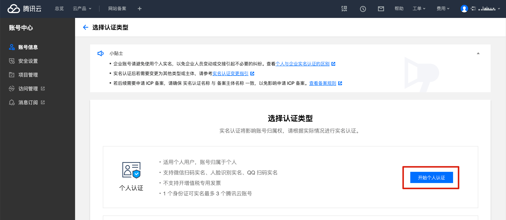
以下信息如实填写，然后点击「下一步」
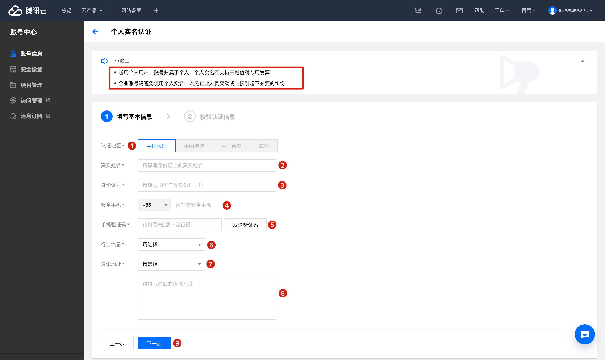
如下提示即代表认证成功
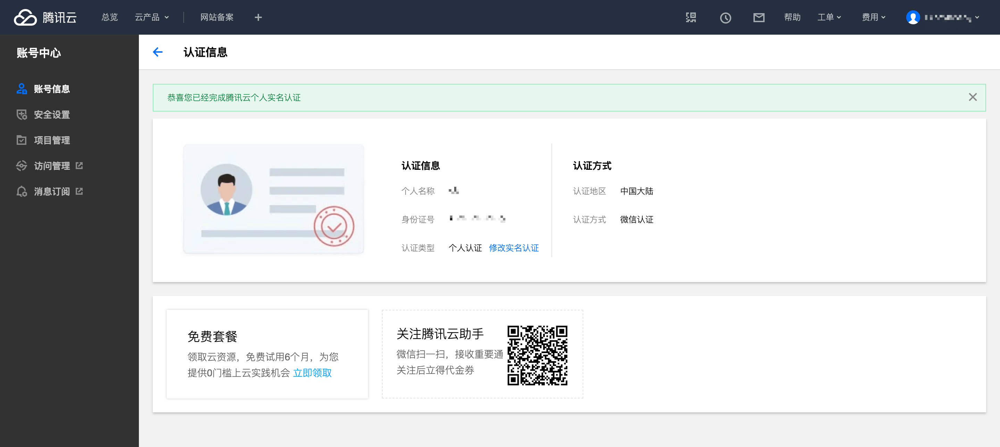
3. 开通机器翻译
如果进入机器翻译页面能直接看到运营数据，证明已开通，请直接跳过此步骤
进入 「机器翻译」 页面
如果只是想使用免费额度，直接点击「免费试用」（每月免费额度使用完之后将直接无法使用，不会扣费）
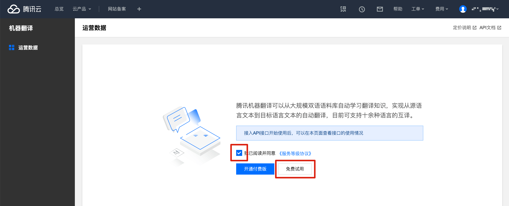
如下提示即代表开通成功
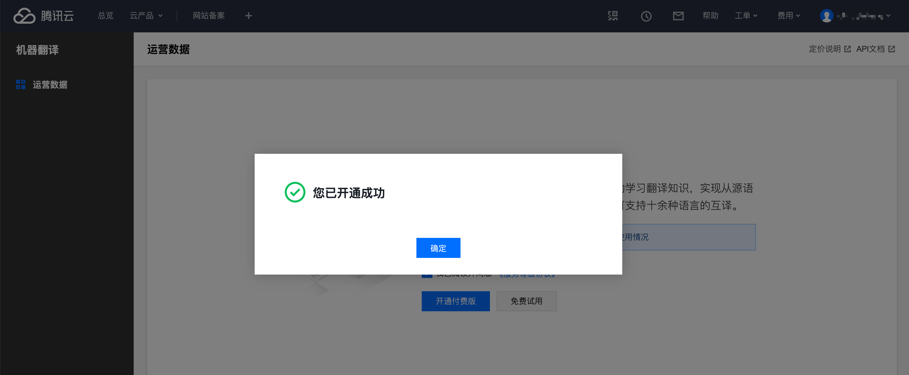
4. 获取秘钥
获取秘钥有两个方法，方法1更快捷，方法2更安全，任选一个跟着操作就可以了。
注意，无论使用哪个方式获取秘钥，前面的步骤（个人认证、开通机器翻译）都是需要操作的。如果不操作，即便获取到了秘钥也无法正常使用！
方法1（更快捷）
如果想更快捷地获取秘钥，可以直接获取「主账号」的秘钥，该秘钥可以直接访问您账户下的所有腾讯云资源。
进入 「访问管理-访问秘钥-API秘钥管理」，点击「新建秘钥」
如果已有秘钥，可直接使用，无需再新建

如下图所示即所需的秘钥
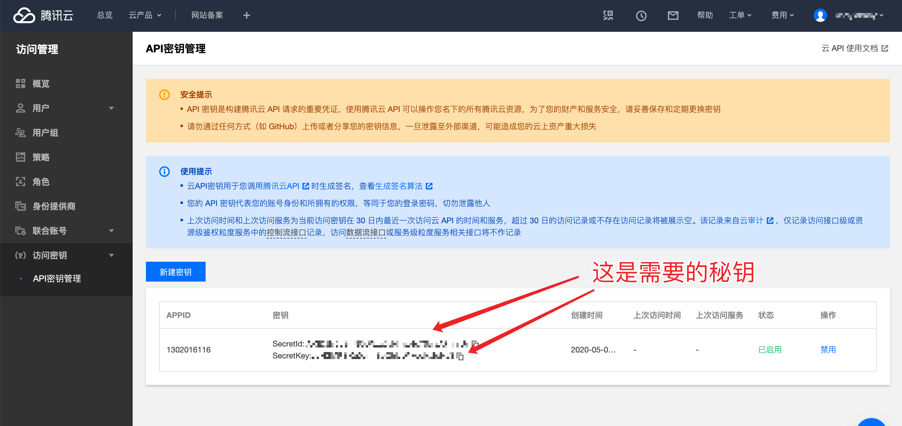
方法2（更安全）
如果想要更安全一些，可以创建一个「子用户」，然后只给这个「子用户」开启访问「机器翻译」API的权限
进入 「访问管理-用户-用户列表」，点击「新建用户」
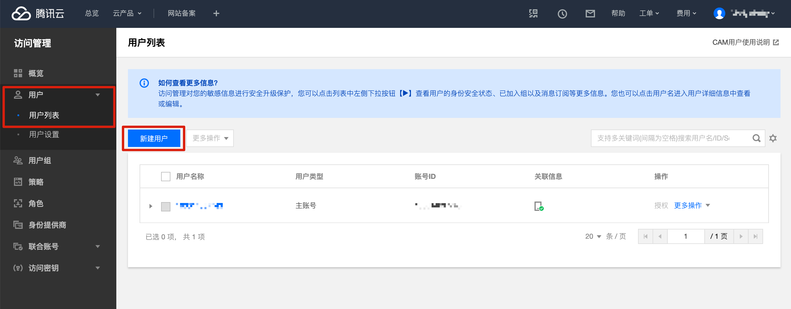
点击「自定义创建」
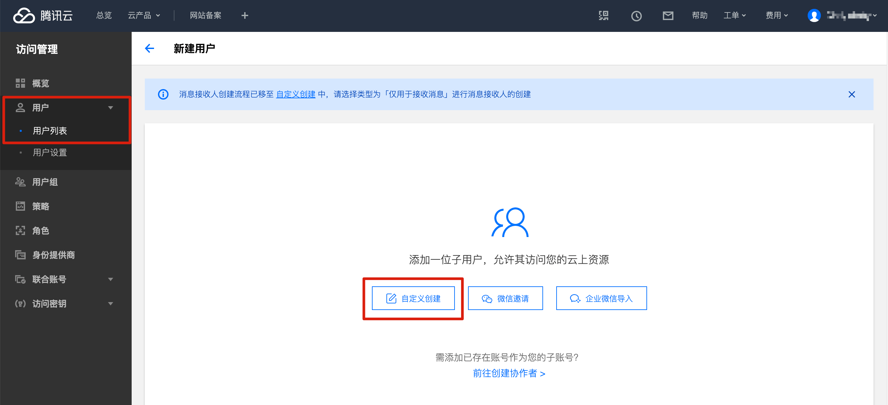
选择「可访问资源并接受消息」
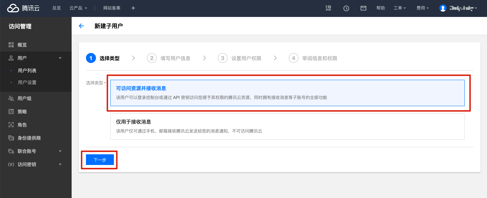
用户名随意设置，勾选上「编程访问」，其他的不用勾选，然后点击「下一步」
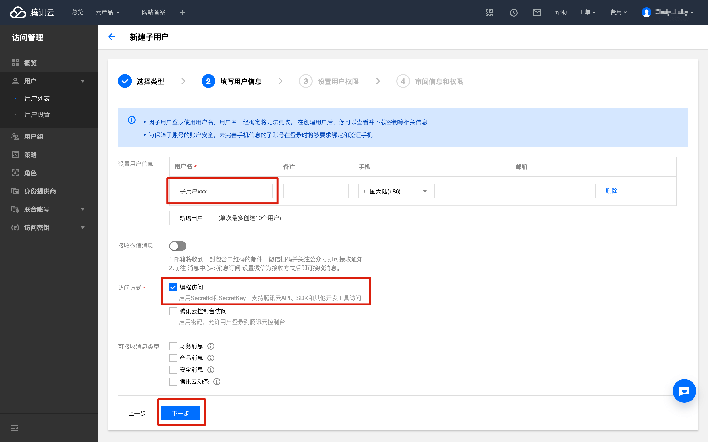
在搜索框输入「tmt」即可快速找到「机器翻译」相关服务，然后勾选上「QcloudTMTFullAccess」，点击「下一步」

点击「完成」

如下图所示即为所需秘钥

如果已经创建完「子用户」，想重新查看秘钥，则进入 「访问管理-用户-用户列表」，展开对应子用户，然后点击「查看用户详情」

点击「API 秘钥」，下图所示即可所需秘钥
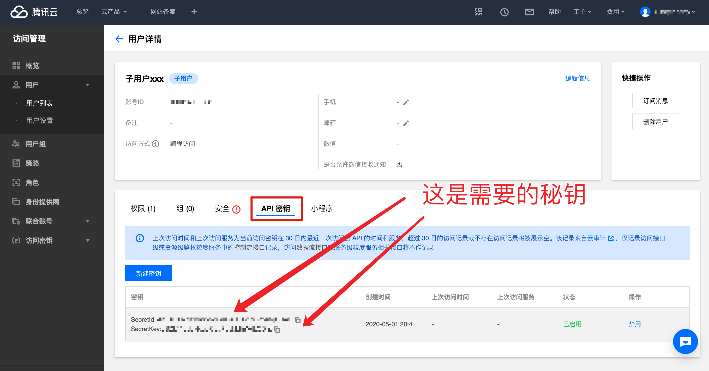
5. 填写秘钥
在翻译引擎管理页面，点击「腾讯翻译」的「设置秘钥」，然后将刚才获取到的秘钥填写到对应位置即可。